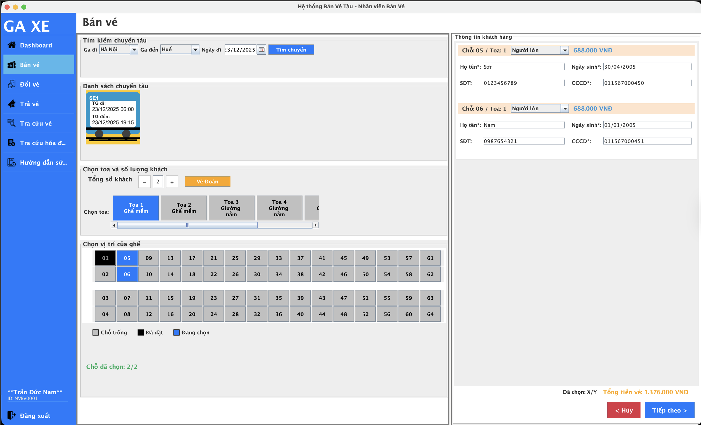
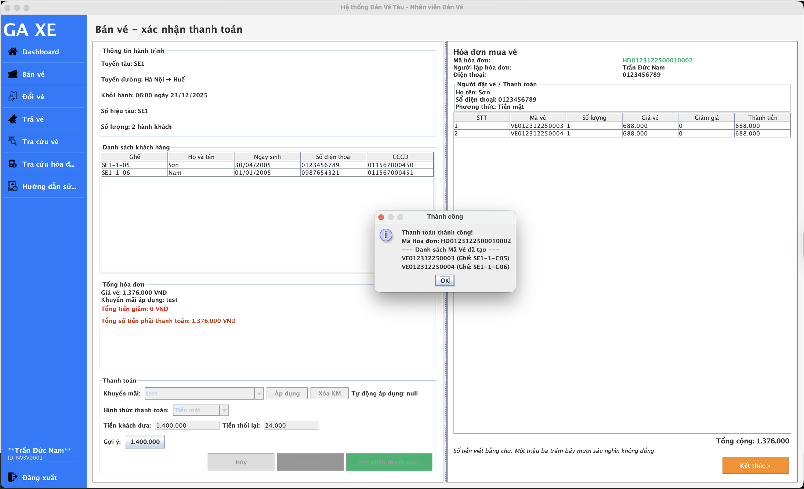

Hướng dẫn bán Vé
Chọn chuyến tàu và chỗ đặt

Tại màn hình bán vé, quy trình thao tác được thực hiện tuần tự theo 4 bước chính như sau:
- Bước 1 - Tìm kiếm và Chọn chuyến: Nhập thông tin Ga đi, Ga đến và Ngày khởi hành rồi nhấn nút "Tìm chuyến". Danh sách chuyến tàu phù hợp sẽ hiện ra, nhân viên chọn một chuyến cụ thể để xem sơ đồ toa.
- Bước 2 - Chọn chỗ ngồi: Xác định số lượng hành khách, chọn toa và nhấn vào các ghế trống (màu trắng) trên sơ đồ. Các ghế đang chọn sẽ chuyển sang trạng thái màu xanh dương.
-
Bước 3 - Nhập thông tin hành khách: Hệ thống hiển thị khung nhập liệu tương ứng với từng ghế bên cột phải.
Cơ chế nhập liệu thông minh: Ưu tiên nhập số CCCD/Định danh đầu tiên.- Nếu là khách hàng cũ: Hệ thống tự động điền Họ tên, Ngày sinh, SĐT.
- Nếu là khách hàng mới: Nhân viên nhập thủ công các trường còn lại.
- Bước 4 - Điều hướng: Sau khi nhập đầy đủ thông tin cho tất cả các vé, nhấn nút "Tiếp theo" (màu xanh dương) ở góc dưới để chuyển sang màn hình thanh toán.
⚠️ Lưu ý quan trọng:
Trong cùng một phiên giao dịch bán vé, nhân viên KHÔNG ĐƯỢC chọn ghế thuộc các chuyến tàu khác nhau. Hệ thống yêu cầu sự đồng nhất về chuyến tàu cho tất cả các vé trong một đơn hàng.
Xác nhận thanh toán
Giao diện thanh toán được thiết kế trực quan với cột bên trái là thông tin xử lý và cột bên phải là hóa đơn xem trước. Quy trình thực hiện như sau:
- Bước 1 - Kiểm tra thông tin: Rà soát lại Thông tin hành trình và Danh sách khách hàng để đảm bảo không có sai sót trước khi xuất vé.
-
Bước 2 - Áp dụng Khuyến mãi (Nếu có):
Hệ thống sẽ tự động tìm và áp dụng chương trình khuyến mãi tốt nhất cho đơn hàng. Nhân viên có thể linh hoạt chọn mã khuyến mãi khác hoặc bấm nút "Xóa KM" nếu khách không muốn áp dụng. -
Bước 3 - Xử lý thanh toán:
- Chọn Hình thức thanh toán (mặc định là Tiền mặt).
- Nhập Tiền khách đưa: Có thể nhập thủ công hoặc nhấn vào các nút "Gợi ý" (ví dụ: 1.400.000) để nhập nhanh theo mệnh giá tiền chẵn.
- Hệ thống sẽ tự động tính toán và hiển thị số Tiền thối lại cần trả cho khách.
-
Bước 4 - Hoàn tất giao dịch: Nhấn nút "Xác nhận thanh toán" (màu xanh lá).
Khi thông báo "Thanh toán thành công" hiện ra, nhấn OK. Lúc này hóa đơn chính thức sẽ hiển thị chi tiết ở khung bên phải. Nhấn nút "Kết thúc" (màu cam) để đóng quy trình và in vé.